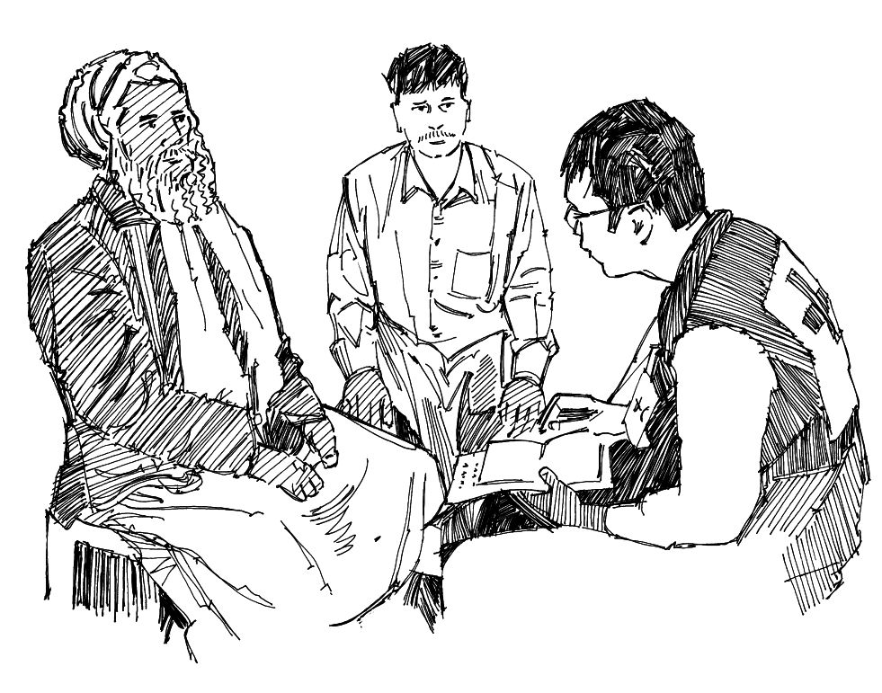

Algunas enfermedades son tan peligrosas o infecciosas que es necesario aislar a las personas que están enfermas para evitar que pasen la infección a otras. El aislamiento significa separar a los que están enfermos de los que están sanos.
Aislar a los pacientes no es encarcelamiento; no se hace por la fuerza y debe llevarse a cabo con su consentimiento. Usted necesita explicar a los pacientes y sus familias por qué es necesario el aislamiento.
Lo que necesita saber
En los casos de fiebre de Ébola, fiebre de Marburgo, fiebre de Lassa, peste, viruela del simio y MERS, puede ser necesario mantener a las personas enfermas lejos de los demás para limitar la propagación de la enfermedad.
En tales casos, una persona (que debe estar protegida adecuadamente) cuida al paciente para reducir las posibilidades de infección. Esto se llama “enfermería con barrera de protección”.
Esta persona proporciona cuidados, comida y agua, y se comunica con el paciente.
Lo que puede hacer
Si se decide que el aislamiento y la enfermería con barrera de protección son necesarios, usted continuará la vigilancia activa como voluntario, en busca de casos de la enfermedad (consulte la herramienta de acción 1).
Cuando se detectan casos, se debe explicar la necesidad de aislamiento a los enfermos y a sus familias. Esto no se hace por la fuerza y los deseos de la familia deben ser respetados. Si explica que el aislamiento protege a otros, incluyendo los miembros de la familia del paciente, puede ser más fácil para el paciente y su familia entender por qué se propone el aislamiento.
Aquellos que cuidan a un paciente en aislamiento se les debe mostrar cómo ayudarlo y cómo protegerse a sí mismos. Deben contar con el equipo de protección adecuado.
Proporcione apoyo psicosocial a las familias (ver herramienta de acción 19). El aislamiento de un ser querido puede ser muy difícil, tanto para la familia como para el paciente.
Intente evitar que el aislamiento cause estigma o rechazo social a los pacientes y sus familias. Explique a la comunidad por qué es necesario el aislamiento. Busque la ayuda de los mayores y de los líderes comunitarios para luchar contra el estigma.
Asegúrese de que las personas en aislamiento tengan alimentos, agua y atención médica adecuados, así como ayuda para hacer frente a cualquier pérdida de medios de subsistencia.

Hable con la comunidad y los mayores para prevenir el estigma y el rechazo social
Herramientas para mensajes comunitarios
Vea los siguientes mensajes de la comunidad para apoyar aislando personas enfermas: